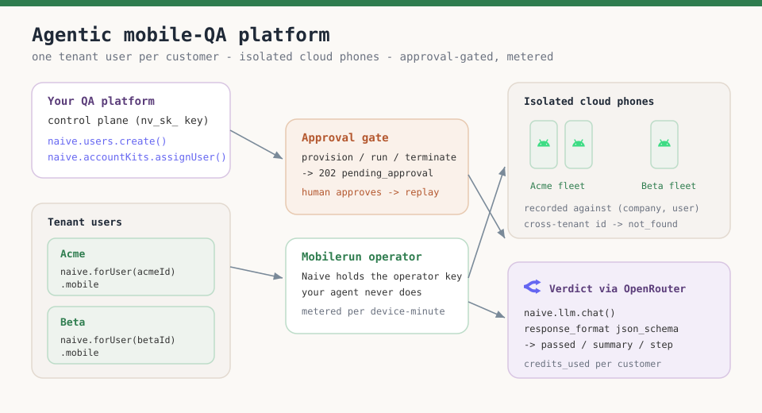
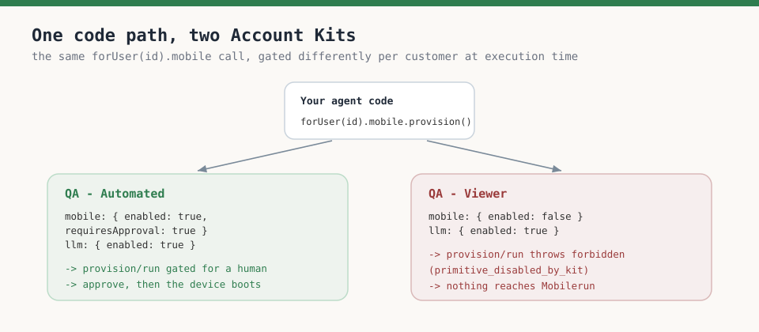
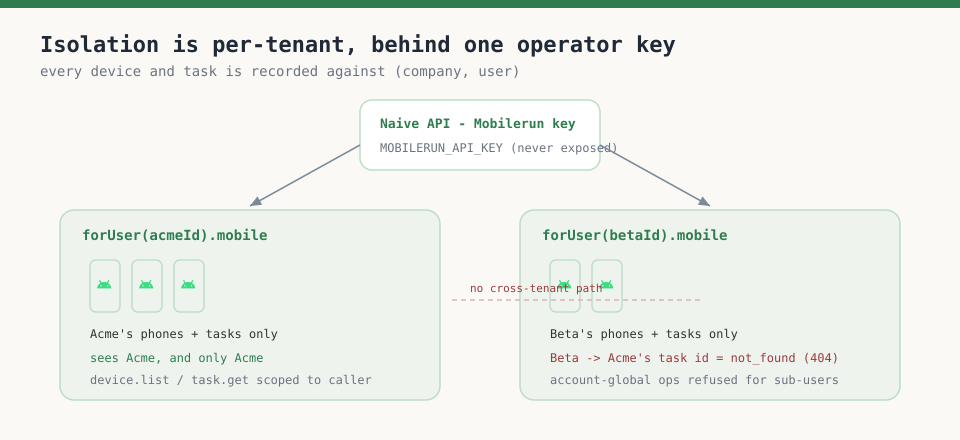
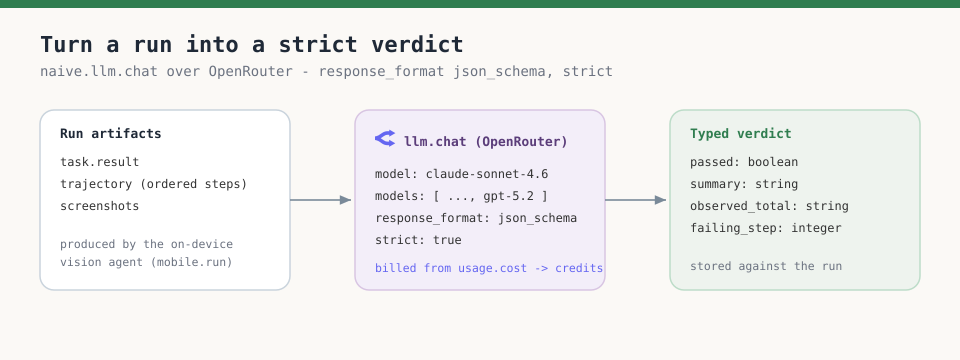
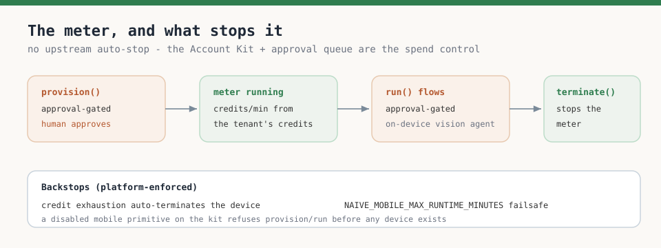

- ›A mobile-QA product is a fleet-of-real-devices problem: each customer needs isolated cloud phones, an agent that drives them in plain English, and hard limits on who can spin up (and forget to shut down) a metered device
- ›
On Naïve each customer is a tenant user; naive.forUser(id).mobile provisions cloud phones on Mobilerun, runs natural-language test flows, and streams the live screen— while Naïve holds the Mobilerun operator key so your agents never do - ›
Cloud phones are billed per minute from credits with no upstream auto-stop, so provisioning, runs, and lifecycle are approval-gated by default— a gated call resolves to 202 pending_approval instead of quietly burning credits - ›Every device and task is recorded against (company, user): an agent scoped to Acme cannot read Beta's device or task, and a cross-tenant id resolves to not_found (404)
- ›
A run's result and trajectory are turned into a strict pass/fail verdict with naive.llm.chat() over OpenRouter using response_format json_schema— the same key-free, credits-metered wrapper - ›
Authority is a reusable Account Kit: an Automated kit runs flows; a Viewer kit disables the mobile primitive, so any run throws forbidden (primitive_disabled_by_kit) server-side— not in a check you remembered to write
Every team shipping "AI mobile testing" this year hits the same wall. The demo — boot one emulator, tell an agent to "log in and check the cart," watch it tap around — is easy. The product is not. The moment you have more than one customer, mobile QA stops being a driving-the-phone problem and becomes a fleet, isolation, and spend-control problem:
- Each customer needs their own isolated cloud phones. A testing SaaS running suites for fifty apps cannot let Acme's agent see, drive, or screenshot Beta's device — ever, including through a buggy or prompt-injected agent.
- The agent must operate real devices behind an operator account, never a shared device-farm key handed to customer code, so the credential never leaks and every device is attributable.
- Cloud phones are metered by the minute with no auto-stop. An agent that provisions a phone and forgets to terminate it burns credits indefinitely. Who may spin up (and shut down) a device has to be enforced at the moment the call runs, not hoped for in code review.
Without a platform you build the Mobilerun operator integration, per-customer device scoping, credential injection, an approval queue for anything that costs money, a per-action allow/deny gate, and per-tenant metering — before you run a single test. That plumbing is the product, and it's what Naïve ships as primitives.
This is a developer tutorial. Every code block runs against the current @usenaive-sdk/server, with signatures pulled straight from the docs and OpenRouter's API reference. By the end you'll have a real pipeline: a customer, their own isolated cloud phone, a plain-English test flow that runs on a real device, a structured pass/fail verdict, and a meter that a human has to approve before it ever starts.

What we're building
- A mobile-QA platform you run for many customer apps. Each customer is a Naïve tenant user.
- Each customer gets isolated cloud phones:
naive.forUser(id).mobile.provision()creates a device on Mobilerun Cloud recorded against that tenant. Naïve holds the operator key; your agent never does. - Test flows are written in plain English and run on a real device with an on-device vision agent:
mobile.run({ task, deviceId, vision: true }). - Provisioning, runs, and device lifecycle are approval-gated — because a cloud phone is a per-minute meter with no upstream auto-stop, spinning one up is a spend decision a human signs off on.
- A finished run's result and trajectory are turned into a strict verdict with
naive.llm.chat()over OpenRouter (response_formatstructured outputs). - Authority is a reusable Account Kit: an Automated kit runs flows; a Viewer kit disables the
mobileprimitive. The limit is enforced at execution time, per call. - Every model call reports
credits_usedand every phone is metered per minute, so you attribute spend per customer.
The primitives in play, all from the docs:
| Primitive | Role in the platform | Docs |
|---|---|---|
| Users | One tenant user per customer — the isolation boundary | naive.users |
| Mobile | Isolated cloud phones + plain-English agent runs | forUser(id).mobile |
| Account Kits | The tier: which primitives are enabled, what needs approval | naive.accountKits |
| Approvals | Human sign-off before a metered device is created | forUser(id).approvals |
| LLM | OpenRouter-wrapped triage of a run into a verdict | forUser(id).llm |
| Logs | Per-tenant audit trail of every device and task | naive.logs |
Step 0: Install and authenticate
You need a Naïve workspace key (nv_sk_...) from the dashboard → Settings → API keys. The SDK is server-only — your key is a server secret, never shipped to a browser or a mobile app.
npm install @usenaive-sdk/serverimport { Naive, NaiveError, isPendingApproval } from "@usenaive-sdk/server";
const naive = new Naive({ apiKey: process.env.NAIVE_API_KEY! });Two surfaces matter, and the difference is the whole design:
naive.*(the root client) acts on your default user and exposes the control plane (naive.users,naive.accountKits,naive.logs).naive.forUser(id).*returns the data plane (mobile,llm,approvals) bound to a specific customer.
Read forUser(customerId) as "do this, as this customer, under this customer's plan." Acme's QA agent is naive.forUser(acmeId); it has no path to Beta's phones.
Step 1: Define QA tiers as Account Kits
An Account Kit is a reusable policy template that controls which native primitives are enabled (primitives_config) and which actions require human approval. You author a few kits and assign customers to them — no per-customer config to keep in sync.

Automated — full QA. The customer's agent can provision phones, run flows, and terminate. Because a phone is a live meter, mobile keeps requiresApproval: true — spinning one up is where a human signs off.
const automatedKit = await naive.accountKits.create({
name: "QA — Automated",
primitives_config: {
mobile: { enabled: true, requiresApproval: true }, // provision/run/lifecycle need a human
llm: { enabled: true },
logs: { enabled: true },
},
});Viewer — read-only dashboard. A customer-facing agent embedded in your portal can read past runs and verdicts, but the mobile primitive is disabled. There is no code path that provisions a device or runs a flow, because the call is refused at the platform.
const viewerKit = await naive.accountKits.create({
name: "QA — Viewer",
primitives_config: {
mobile: { enabled: false }, // any provision/run throws forbidden at execution time
llm: { enabled: true },
},
});A few facts to internalize, all from the docs:
- A disabled primitive is refused server-side: calling it throws
forbiddenwith the hintprimitive_disabled_by_kit. (errors) - On the mobile primitive, provisioning, device lifecycle, running/stopping tasks, uploads, and mutating wildcard
calls are approval-gated by default. (mobile) - Human (dashboard/session) callers bypass the approval gate, and so do agent calls on the account's own default agent profile — only agent calls on real tenant users are gated. (approvals)
Step 2: Provision a customer and their first cloud phone
Each customer is a Naïve user. Create one and assign the kit for the tier. Users you create through the API never sign into Naïve — you manage them entirely through the SDK.
const acme = await naive.users.create({
external_id: "acme_app", // your own stable id (e.g. your DB row)
email: "qa@acme.app",
label: "Acme Mobile (Android)",
});
await naive.accountKits.assignUser(automatedKit.id, acme.id);Now provision a phone. mobile.provision() creates the device immediately and starts a per-minute meter — so with the Automated kit the agent's call is frozen for approval instead of quietly billing. Handle the pending status with the typed helper:
const client = naive.forUser(acme.id);
const res = await client.mobile.provision({ country: "US" });
let deviceId: string;
if (isPendingApproval(res)) {
// HTTP 202 — not an error. No device exists yet and no meter is running.
console.log("Provision pending approval:", res.approval_id);
// A human (an engineer, or the customer in-portal) approves it:
await client.approvals.approve(res.approval_id);
// The API replays the frozen provision and records the result:
const approved = await client.approvals.get(res.approval_id);
console.log(approved.status); // "executed"
deviceId = approved.result.phone.device_id;
} else {
// Not gated (e.g. a human ran it, or requiresApproval is off).
console.log("Metered at", res.credits_per_minute, "credits/min");
deviceId = res.phone.device_id;
}Only now, after a human approved it, is a device live and the meter running. Wait for it to boot, then grab a live stream you can embed in your dashboard:
await client.mobile.waitReady(deviceId);
const { stream_url, stream_token, console_url } =
await client.mobile.stream(deviceId);
// Render stream_url in your portal so the customer watches the run live.That phone belongs to Acme and only Acme. The next section is why that sentence is load-bearing.

Step 3: Run a plain-English test flow
This is where the agent earns its keep. mobile.run() drives one of the customer's active phones with a natural-language task and an on-device vision agent — no selectors, no Appium scripts. It's a sensitive call, so on the Automated kit it goes through the same approval gate; approve it exactly like the provision above.
const run = await client.mobile.run({
task:
"Open the Acme app. Sign in with qa@acme.app / hunter2. Add the first " +
"product to the cart, go to checkout, and report the total shown.",
deviceId,
vision: true, // let the agent read the screen
reasoning: true, // capture step-by-step reasoning
});
// run may itself be a PendingApproval — approve, then read the task id:
const taskId = isPendingApproval(run)
? (await client.approvals.approve(run.approval_id),
(await client.approvals.get(run.approval_id)).result.id)
: run.id;Poll the task until it resolves, then pull the artifacts you'll store per run — the result, the step-by-step trajectory, and the captured screenshots:
let task = await client.mobile.task(taskId);
while (task.status === "running" || task.status === "pending") {
await new Promise((r) => setTimeout(r, 3000));
task = await client.mobile.task(taskId);
}
const trajectory = await client.mobile.trajectory(taskId); // ordered steps + actions
const screenshots = await client.mobile.screenshots(taskId); // screenshot URLs
console.log(task.status, task.result);Everything here is scoped to Acme by forUser(acme.id). The task, its trajectory, and its screenshots are recorded against (company, user) — no other tenant can fetch them by id.
Step 4: Triage the run into a strict verdict with OpenRouter
A raw trajectory isn't a QA result — your dashboard needs a pass/fail with a reason and the failing step. Turn the run into a typed verdict with naive.forUser(id).llm.chat(), which is a full wrapper over OpenRouter: it forwards OpenRouter's request body as-is, so you use OpenRouter's structured outputs verbatim — response_format.type json_schema with strict: true — and Naïve bills the call from the exact usage.cost OpenRouter returns.

const verdictSchema = {
type: "json_schema",
json_schema: {
name: "qa_verdict",
strict: true,
schema: {
type: "object",
properties: {
passed: { type: "boolean", description: "Did the flow meet its goal?" },
summary: { type: "string", description: "One-sentence result" },
observed_total: {
type: "string",
description: "The checkout total the agent reported, or empty",
},
failing_step: {
type: "integer",
description: "1-based index of the step that failed, or -1 if passed",
},
},
required: ["passed", "summary", "observed_total", "failing_step"],
additionalProperties: false,
},
},
} as const;
async function verdictFor(clientId: string, task: any, trajectory: any) {
const res = await naive.forUser(clientId).llm.chat({
model: "anthropic/claude-sonnet-4.6",
models: ["anthropic/claude-sonnet-4.6", "openai/gpt-5.2"], // fallback chain
messages: [
{
role: "system",
content:
"You are a mobile QA analyst. Given a test task, its final result, " +
"and the step-by-step trajectory, decide if the flow passed. Never invent steps.",
},
{
role: "user",
content:
`TASK:\n${task.task}\n\n` +
`RESULT:\n${JSON.stringify(task.result)}\n\n` +
`TRAJECTORY:\n${JSON.stringify(trajectory)}`,
},
],
response_format: verdictSchema,
});
console.log("triage credits:", res.credits_used); // attribute to this customer
return JSON.parse(res.choices[0].message.content); // content is a JSON string
}The run already used an on-device vision model to drive the phone; this call only reasons over the text it produced, so it's cheap and deterministic. Set a primary model and a models fallback so a provider outage doesn't stall the suite.
Step 5: Terminate to stop the meter — and account for the spend
A cloud phone bills per minute from credits until you terminate it, and there is no upstream auto-stop — this is the single most important operational fact of the primitive. Always release the device when the suite is done.
await client.mobile.terminate(deviceId); // STOPS the per-minute meter (approval-gated)
Because there's no auto-stop, the meter is exactly the reason provisioning is gated: the Account Kit and the approval queue are the spend control, not a try/finally you hope the agent respects. Naïve gives you two backstops on top:
- Credit exhaustion auto-terminates the device — a runaway agent can't spend past the tenant's balance.
- A max-runtime failsafe (
NAIVE_MOBILE_MAX_RUNTIME_MINUTES) terminates devices left running too long.
You can confirm nothing is billing and reconcile per customer from the SDK:
const status = await client.mobile.status(); // config, reachability, your device countEach tenant's credits fund only its own phones, and each run triage carries credits_used — so a monthly bill per customer is device-minutes plus triage credits, both attributable.
Step 6: The moat, shown not told
Everything above is a normal pipeline. Here is what you'd have to build yourself, and what Naïve enforces server-side.
Isolation is per-tenant, not a filter you wrote
Every device and task is recorded against (company, user). An agent scoped to Beta that tries to read Acme's task by id doesn't fall through to Acme's data — it resolves to not_found:
try {
// Beta's agent tries to fetch a task that belongs to Acme:
await naive.forUser(beta.id).mobile.task(acmeTaskId);
} catch (err) {
if (err instanceof NaiveError) {
console.log(err.status, err.code); // 404 not_found — cross-tenant
}
}The Mobilerun operator key that actually talks to the device farm lives on Naïve's API, never in your agent or your customer's app.
A run the platform refuses
Assign a customer the Viewer kit and run the exact same code. The device is never provisioned and the flow never runs — the mobile primitive is disabled by the kit, and the refusal is thrown before anything reaches Mobilerun:
await naive.accountKits.assignUser(viewerKit.id, acme.id);
try {
await naive.forUser(acme.id).mobile.provision({ country: "US" });
} catch (err) {
if (err instanceof NaiveError) {
console.log(err.code); // "forbidden"
console.log(err.hint); // "primitive_disabled_by_kit"
}
}The gate lives in the kit, not in a check you remembered to write — so a prompt-injected "spin up ten phones and leave them running" buried in a test description can't talk the agent past it. This is the difference between a demo and a platform:
| You'd hand-build | Naïve enforces at execution time |
|---|---|
| Mobilerun operator integration + key custody | The mobile primitive; the operator key never leaves the API |
| Per-customer device scoping on every call | forUser(id) binds devices/tasks to one tenant; cross-tenant → not_found |
| An approval queue before a metered phone is created | provision/run/terminate return 202 pending_approval; approval replays them |
| An allow/deny check before each run | primitives_config — a disabled mobile primitive throws forbidden |
| Per-customer metering + a runaway-spend cutoff | Per-minute credits per tenant; credit-exhaustion + max-runtime auto-terminate |
The full loop
Wiring the pieces into a per-suite handler — provision (once approved), run each flow, triage, and always terminate:
async function runSuite(customerId: string, flows: string[]) {
const client = naive.forUser(customerId);
// 1. Provision (approval-gated) and wait for the human + boot
const p = await client.mobile.provision({ country: "US" });
const deviceId = isPendingApproval(p)
? (await client.approvals.approve(p.approval_id),
(await client.approvals.get(p.approval_id)).result.phone.device_id)
: p.phone.device_id;
await client.mobile.waitReady(deviceId);
const results = [];
try {
for (const task of flows) {
const run = await client.mobile.run({ task, deviceId, vision: true });
const taskId = isPendingApproval(run)
? (await client.approvals.approve(run.approval_id),
(await client.approvals.get(run.approval_id)).result.id)
: run.id;
let t = await client.mobile.task(taskId);
while (t.status === "running" || t.status === "pending") {
await new Promise((r) => setTimeout(r, 3000));
t = await client.mobile.task(taskId);
}
const trajectory = await client.mobile.trajectory(taskId);
results.push(await verdictFor(customerId, t, trajectory));
}
} finally {
await client.mobile.terminate(deviceId); // stop the meter no matter what
}
return results;
}Point it at a customer's regression suite and it drives a real phone through every flow, returns a typed verdict per flow, and shuts the meter off — each device bounded by the customer's kit and each spend approved. Swap the kit and the same code becomes read-only. Swap the customerId and it operates on a different, fully isolated fleet.
If you'd rather let a model drive this end to end, naive.forUser(id).agentTools() exposes mobile (and the wildcard mobile.call) as a discover-then-run meta-toolset — still Account-Kit-gated and approval-gated server-side, so the same walls apply inside the agent loop.
What you built
- A multi-tenant mobile-QA platform where each customer is a tenant user with a physically isolated fleet of cloud phones behind one operator key you never expose.
- Plain-English test flows that run on real devices via
mobile.run, with the live screen, trajectory, and screenshots captured per run. - Structured triage over OpenRouter —
naive.llm.chat()withresponse_formatjson_schema, strict — turning each run into a typed pass/fail verdict billed in credits. - Execution-time authority and spend control: provisioning and runs are approval-gated because a phone is a live meter with no auto-stop, and a Viewer kit makes any run throw
forbidden— enforced by the platform, not your code.
Start from the Mobile guide, the Account Kits guide, and the Approvals guide. Grab a workspace key in the Naïve dashboard and ship a QA fleet your customers can actually trust an agent to run.
Why can't I just build this with an emulator and a script?+
How does Naïve run cloud phones without me holding a Mobilerun key?+
What stops an agent from leaving expensive phones running?+
How is each customer's device fleet isolated?+
Where does OpenRouter come in?+
What does this cost to run per customer?+
Building the autonomous company infrastructure.
A governed agent profile is an AI agent with identity, spend limits, approvals, audit, and instant revoke — enforced on every action. Here's the full lifecycle.
Building multi-tenant AI agents into your SaaS means giving each customer an isolated, governed agent. Here's the full architecture and how to ship it.
Human-in-the-loop approvals that freeze sensitive actions until you say yes, a per-user audit trail of everything an agent did, short-lived scoped MCP sessions, and unified async job tracking — the controls that make an autonomous fleet safe to run.
Spin up agent-owned Docker workloads on managed cloud compute — long-running services with public URLs, run-to-completion batch jobs, and scheduled (cron-for-code) jobs — metered by the second, isolated per tenant, with an interactive shell. No AWS account, no cluster, no DevOps.